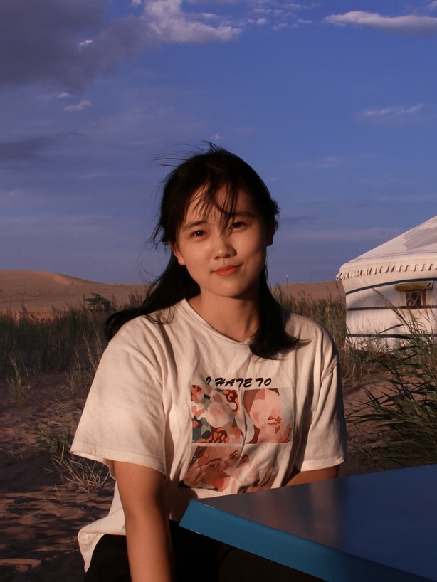

Zixiao Jolene Wang
My name is Zixiao [/tsʰɨ́.ɕjɑʊ̯/] Jolene Wang. I am a third-year Ph.D. student at Harvard University, co-advised by James Robins and Rajarshi Mukherjee.
Previously, I received my M.S. in Biostatistics from Johns Hopkins University advised by Ilya Shpitser and Hongkai Ji, and my B.S. from Shanghai Jiao Tong University advised by Lin Liu and Hongyu Zhao.

As LLMs write more proofs, I am interested in how statistical communities can build trust and digest these proofs across generations. This motivates my recent work on StatLib.
I study modelling architectures for scientific discovery.
zixiaowang [at] fas.harvard.edu
Internship
- AletheAI, Research Intern, – — AI for mathematics and science.
News
- — Awarded the Rose Traveling Fellowship.
- — Received a Spotlight acceptance at NeurIPS 2025 for Optimal Nuisance Function Tuning for Doubly Robust Functional Estimation under Proportional Asymptotics.
- — Participated in the Lean for Mathematicians 2025 workshop in New York City.
- — Presented Identification and Estimation for Nonignorable Missing Data: A Data Fusion Approach at ICML 2024 in Vienna, Austria.
Publications
-
Improved Variance Estimation in Homoskedastic Nonparametric Random-Design Regression via a Two-Scale Approach
Preprint, 2026.
-
VeriBench: An End-to-End Formal Verification Benchmark for AI Coding Agents in Lean 4
AI for Math and Deep Learning for Code Workshops at ICML, 2026.
-
Certifying the Judge: Falsifiable Properties for LLM-Based Evaluation of Formal Code
Deep Learning for Code Workshop at ICML, 2026.
-
Optimal Nuisance Function Tuning for Doubly Robust Functional
Estimation under Proportional Asymptotics
NeurIPS, 2025 (Spotlight).
- Global Mapping of Combinatorial Chromatin Regulatory Events Using Hi-Plex CUT&Tag
-
Can a Society of Generative Agents Simulate Human Behavior and
Inform Public Health Policy? A Case Study on Vaccine
Hesitancy
COLM, 2025.
-
Identification and Estimation for Nonignorable Missing Data: A
Data Fusion Approach
Proceedings of the 41st International Conference on Machine Learning (ICML), 2024.
-
Book Review: Semiparametric Regression with R
Journal of the American Statistical Association, 117(540):2283-2287, 2022.
-
Shared Genetic Architecture of Blood Eosinophil Counts and Asthma
in UK Biobank
ERJ Open Research, 9(4), 2023.
-
An Asynchronous Variational Integrator for Contact Problems
Involving Elastoplastic Solids
Acta Mechanica Solida Sinica, 2024.
Talks
2026
- Optimal Nuisance Function Tuning for Doubly Robust Functional Estimation under Proportional Asymptotics, July, Guiyang, JCSDS / IMS-China
- Towards StatLib: A Tour of Formal Mathematics for Statisticians, , Cambridge, INI
- Optimal Nuisance Function Tuning for Doubly Robust Functional Estimation under Proportional Asymptotics, May, UW reading group
2024
- Identification and Estimation for Nonignorable Missing Data: A Data Fusion Approach, July, Vienna, ICML
- Identification and Estimation for Nonignorable Missing Data: A Data Fusion Approach, , Shanghai, SJTU